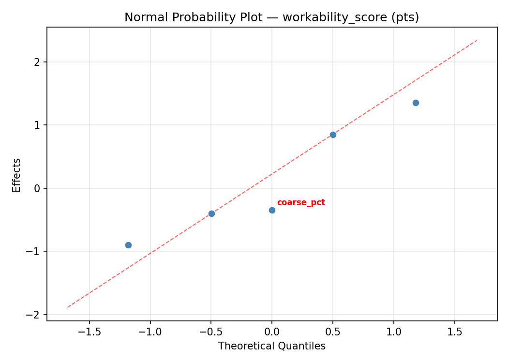
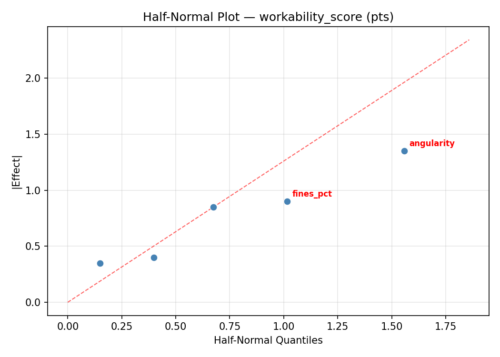
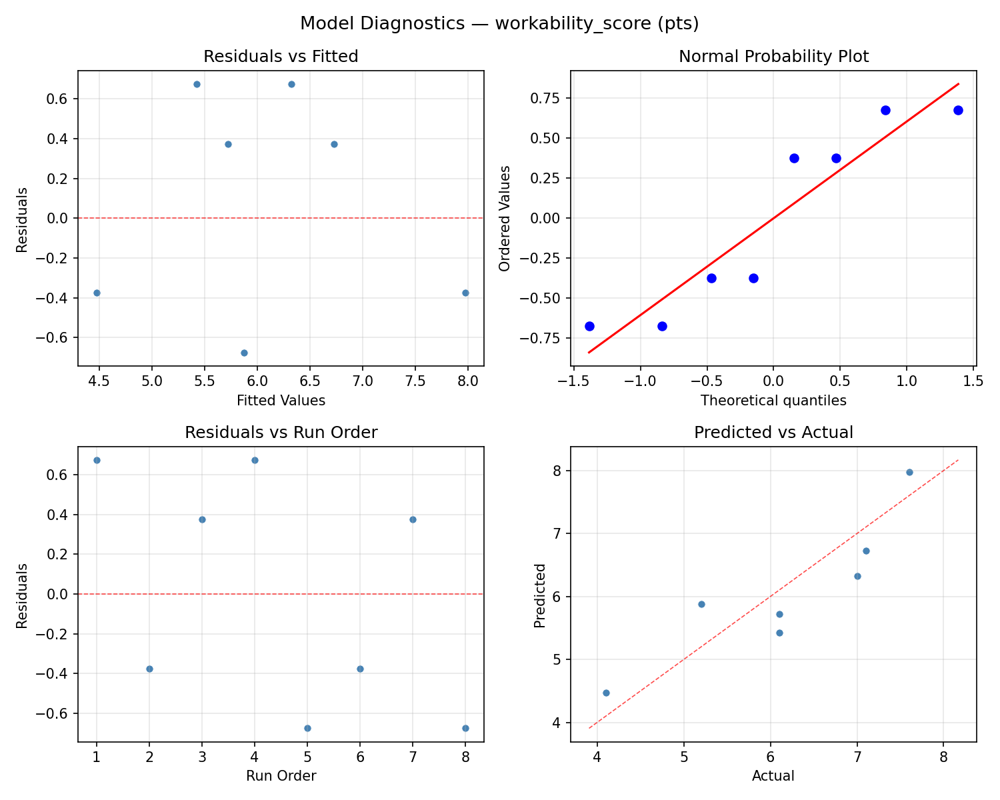
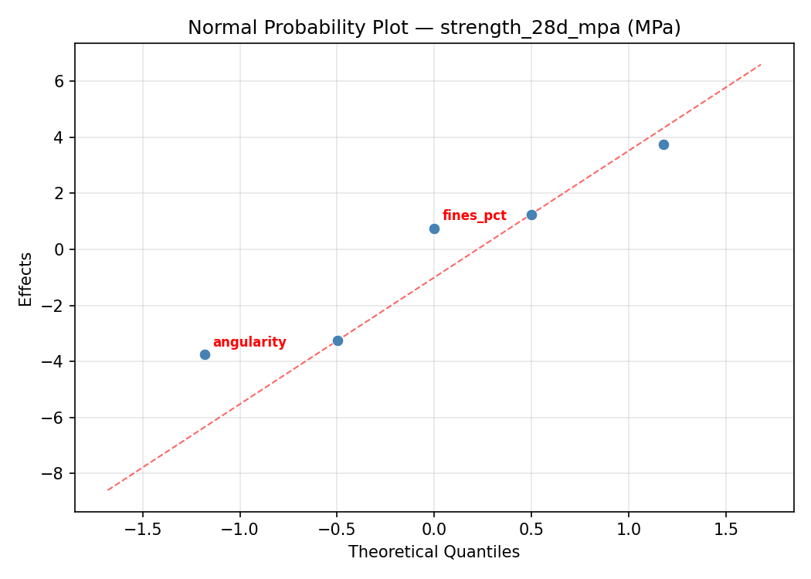
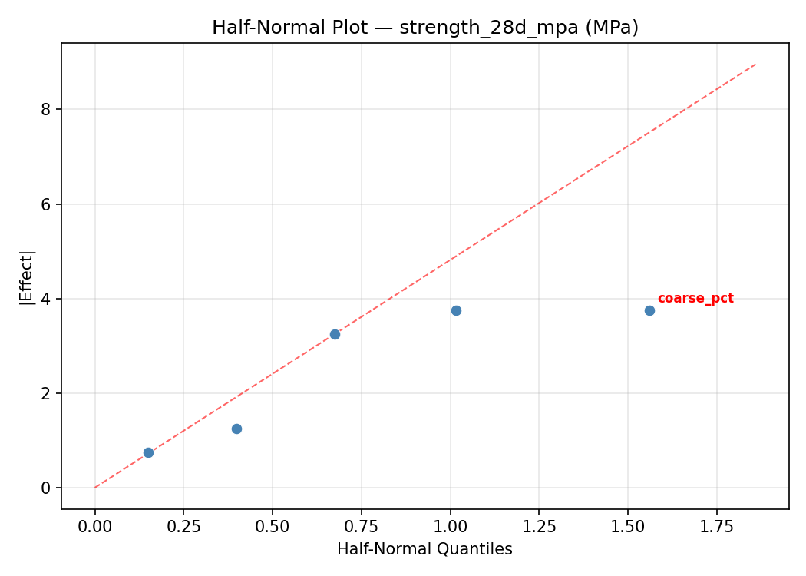
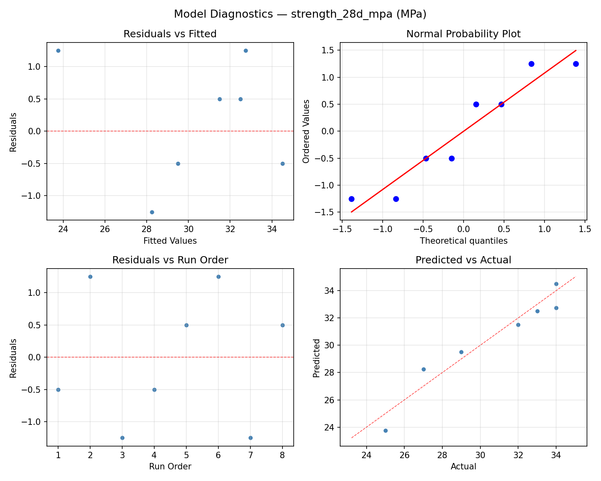

Summary
This experiment investigates aggregate gradation optimization. Plackett-Burman screening of coarse aggregate ratio, sand fineness modulus, max aggregate size, fines content, and angularity for workability and strength.
The design varies 5 factors: coarse pct (%), ranging from 50 to 75, fineness mod (FM), ranging from 2.3 to 3.1, max size mm (mm), ranging from 10 to 25, fines pct (%), ranging from 0 to 5, and angularity (level), ranging from 1 to 5. The goal is to optimize 2 responses: workability score (pts) (maximize) and strength 28d mpa (MPa) (maximize). Fixed conditions held constant across all runs include cement = type_I, target slump = 100mm.
A Plackett-Burman screening design was used to efficiently test 5 factors in only 8 runs. This design assumes interactions are negligible and focuses on identifying the most influential main effects.
Key Findings
For workability score, the most influential factors were angularity (32.5%), fineness mod (22.5%), fines pct (20.0%). The best observed value was 7.6 (at coarse pct = 50, fineness mod = 3.1, max size mm = 10).
For strength 28d mpa, the most influential factors were fineness mod (32.1%), max size mm (20.8%), fines pct (20.8%). The best observed value was 34.0 (at coarse pct = 75, fineness mod = 2.3, max size mm = 10).
Recommended Next Steps
- Follow up with a response surface design (CCD or Box-Behnken) on the top 3–4 factors to model curvature and find the true optimum.
- Consider whether any fixed factors should be varied in a future study.
- The screening results can guide factor reduction — drop factors contributing less than 5% and re-run with a smaller, more focused design.
Experimental Setup
Factors
| Factor | Low | High | Unit |
|---|
coarse_pct | 50 | 75 | % |
fineness_mod | 2.3 | 3.1 | FM |
max_size_mm | 10 | 25 | mm |
fines_pct | 0 | 5 | % |
angularity | 1 | 5 | level |
Fixed: cement = type_I, target_slump = 100mm
Responses
| Response | Direction | Unit |
|---|
workability_score | ↑ maximize | pts |
strength_28d_mpa | ↑ maximize | MPa |
Configuration
{
"metadata": {
"name": "Aggregate Gradation Optimization",
"description": "Plackett-Burman screening of coarse aggregate ratio, sand fineness modulus, max aggregate size, fines content, and angularity for workability and strength"
},
"factors": [
{
"name": "coarse_pct",
"levels": [
"50",
"75"
],
"type": "continuous",
"unit": "%"
},
{
"name": "fineness_mod",
"levels": [
"2.3",
"3.1"
],
"type": "continuous",
"unit": "FM"
},
{
"name": "max_size_mm",
"levels": [
"10",
"25"
],
"type": "continuous",
"unit": "mm"
},
{
"name": "fines_pct",
"levels": [
"0",
"5"
],
"type": "continuous",
"unit": "%"
},
{
"name": "angularity",
"levels": [
"1",
"5"
],
"type": "continuous",
"unit": "level"
}
],
"fixed_factors": {
"cement": "type_I",
"target_slump": "100mm"
},
"responses": [
{
"name": "workability_score",
"optimize": "maximize",
"unit": "pts"
},
{
"name": "strength_28d_mpa",
"optimize": "maximize",
"unit": "MPa"
}
],
"settings": {
"operation": "plackett_burman",
"test_script": "use_cases/236_concrete_aggregate/sim.sh"
}
}
Experimental Matrix
The Plackett-Burman Design produces 8 runs. Each row is one experiment with specific factor settings.
| Run | coarse_pct | fineness_mod | max_size_mm | fines_pct | angularity |
|---|
| 1 | 75 | 3.1 | 25 | 0 | 1 |
| 2 | 50 | 2.3 | 25 | 5 | 1 |
| 3 | 50 | 3.1 | 10 | 5 | 1 |
| 4 | 75 | 3.1 | 25 | 5 | 5 |
| 5 | 50 | 3.1 | 10 | 0 | 5 |
| 6 | 75 | 2.3 | 10 | 5 | 5 |
| 7 | 50 | 2.3 | 25 | 0 | 5 |
| 8 | 75 | 2.3 | 10 | 0 | 1 |
Step-by-Step Workflow
1
Preview the design
$ python doe.py info --config use_cases/236_concrete_aggregate/config.json
2
Generate the runner script
$ python doe.py generate --config use_cases/236_concrete_aggregate/config.json \
--output use_cases/236_concrete_aggregate/results/run.sh --seed 42
3
Execute the experiments
$ bash use_cases/236_concrete_aggregate/results/run.sh
4
Analyze results
$ python doe.py analyze --config use_cases/236_concrete_aggregate/config.json
5
Get optimization recommendations
$ python doe.py optimize --config use_cases/236_concrete_aggregate/config.json
6
Multi-objective optimization
With 2 competing responses, use --multi to find the best compromise via Derringer–Suich desirability.
$ python doe.py optimize --config use_cases/236_concrete_aggregate/config.json --multi
7
Generate the HTML report
$ python doe.py report --config use_cases/236_concrete_aggregate/config.json \
--output use_cases/236_concrete_aggregate/results/report.html
Features Exercised
| Feature | Value |
|---|
| Design type | plackett_burman |
| Factor types | continuous (all 5) |
| Arg style | double-dash |
| Responses | 2 (workability_score ↑, strength_28d_mpa ↑) |
| Total runs | 8 |
Analysis Results
Generated from actual experiment runs using the DOE Helper Tool.
Response: workability_score
Top factors: angularity (32.5%), fineness_mod (22.5%), fines_pct (20.0%).
ANOVA
| Source | DF | SS | MS | F | p-value |
|---|
| Source | DF | SS | MS | F | p-value |
| coarse_pct | 1 | 0.3200 | 0.3200 | 0.167 | 0.7000 |
| fineness_mod | 1 | 1.6200 | 1.6200 | 0.844 | 0.4005 |
| max_size_mm | 1 | 0.7200 | 0.7200 | 0.375 | 0.5671 |
| fines_pct | 1 | 1.2800 | 1.2800 | 0.667 | 0.4513 |
| angularity | 1 | 3.3800 | 3.3800 | 1.760 | 0.2419 |
| coarse_pct*fineness_mod | 1 | 0.7200 | 0.7200 | 0.375 | 0.5671 |
| coarse_pct*max_size_mm | 1 | 1.6200 | 1.6200 | 0.844 | 0.4005 |
| coarse_pct*fines_pct | 1 | 3.3800 | 3.3800 | 1.760 | 0.2419 |
| coarse_pct*angularity | 1 | 1.2800 | 1.2800 | 0.667 | 0.4513 |
| fineness_mod*max_size_mm | 1 | 0.3200 | 0.3200 | 0.167 | 0.7000 |
| fineness_mod*fines_pct | 1 | 1.6200 | 1.6200 | 0.844 | 0.4005 |
| fineness_mod*angularity | 1 | 0.7200 | 0.7200 | 0.375 | 0.5671 |
| max_size_mm*fines_pct | 1 | 0.7200 | 0.7200 | 0.375 | 0.5671 |
| max_size_mm*angularity | 1 | 1.6200 | 1.6200 | 0.844 | 0.4005 |
| fines_pct*angularity | 1 | 0.3200 | 0.3200 | 0.167 | 0.7000 |
| Error | (Lenth | PSE) | 5 | 9.6000 | 1.9200 |
| Total | 7 | 9.6600 | 1.3800 | | |
Pareto Chart

Main Effects Plot

Normal Probability Plot of Effects

Half-Normal Plot of Effects

Model Diagnostics

Response: strength_28d_mpa
Top factors: fineness_mod (32.1%), max_size_mm (20.8%), fines_pct (20.8%).
ANOVA
| Source | DF | SS | MS | F | p-value |
|---|
| Source | DF | SS | MS | F | p-value |
| coarse_pct | 1 | 1.1250 | 1.1250 | 0.050 | 0.8326 |
| fineness_mod | 1 | 36.1250 | 36.1250 | 1.592 | 0.2627 |
| max_size_mm | 1 | 15.1250 | 15.1250 | 0.667 | 0.4513 |
| fines_pct | 1 | 15.1250 | 15.1250 | 0.667 | 0.4513 |
| angularity | 1 | 15.1250 | 15.1250 | 0.667 | 0.4513 |
| coarse_pct*fineness_mod | 1 | 15.1250 | 15.1250 | 0.667 | 0.4513 |
| coarse_pct*max_size_mm | 1 | 36.1250 | 36.1250 | 1.592 | 0.2627 |
| coarse_pct*fines_pct | 1 | 15.1250 | 15.1250 | 0.667 | 0.4513 |
| coarse_pct*angularity | 1 | 15.1250 | 15.1250 | 0.667 | 0.4513 |
| fineness_mod*max_size_mm | 1 | 1.1250 | 1.1250 | 0.050 | 0.8326 |
| fineness_mod*fines_pct | 1 | 3.1250 | 3.1250 | 0.138 | 0.7257 |
| fineness_mod*angularity | 1 | 3.1250 | 3.1250 | 0.138 | 0.7257 |
| max_size_mm*fines_pct | 1 | 3.1250 | 3.1250 | 0.138 | 0.7257 |
| max_size_mm*angularity | 1 | 3.1250 | 3.1250 | 0.138 | 0.7257 |
| fines_pct*angularity | 1 | 1.1250 | 1.1250 | 0.050 | 0.8326 |
| Error | (Lenth | PSE) | 5 | 113.4375 | 22.6875 |
| Total | 7 | 88.8750 | 12.6964 | | |
Pareto Chart

Main Effects Plot

Normal Probability Plot of Effects

Half-Normal Plot of Effects

Model Diagnostics

Response Surface Plots
3D surfaces fitted with quadratic RSM. Red dots are observed data points.
strength 28d mpa coarse pct vs angularity

strength 28d mpa coarse pct vs fineness mod

strength 28d mpa coarse pct vs fines pct

strength 28d mpa coarse pct vs max size mm

strength 28d mpa fineness mod vs angularity

strength 28d mpa fineness mod vs fines pct

strength 28d mpa fineness mod vs max size mm

strength 28d mpa fines pct vs angularity

strength 28d mpa max size mm vs angularity

strength 28d mpa max size mm vs fines pct

workability score coarse pct vs angularity

workability score coarse pct vs fineness mod

workability score coarse pct vs fines pct

workability score coarse pct vs max size mm

workability score fineness mod vs angularity

workability score fineness mod vs fines pct

workability score fineness mod vs max size mm

workability score fines pct vs angularity

workability score max size mm vs angularity

workability score max size mm vs fines pct

Multi-Objective Optimization
When responses compete, Derringer–Suich desirability finds the best compromise.
Each response is scaled to a 0–1 desirability, then combined via a weighted geometric mean.
Overall Desirability
D = 0.7343
Per-Response Desirability
| Response | Weight | Desirability | Predicted | Dir |
|---|
workability_score |
1.5 |
|
6.10 0.5649 6.10 pts |
↑ |
strength_28d_mpa |
1.5 |
|
34.00 0.9545 34.00 MPa |
↑ |
Recommended Settings
| Factor | Value |
|---|
coarse_pct | 75 % |
fineness_mod | 2.3 FM |
max_size_mm | 10 mm |
fines_pct | 0 % |
angularity | 1 level |
Source: from observed run #4
Trade-off Summary
Sacrifice = how much worse than single-objective best.
| Response | Predicted | Best Observed | Sacrifice |
|---|
strength_28d_mpa | 34.00 | 34.00 | +0.00 |
Top 3 Runs by Desirability
| Run | D | Factor Settings |
|---|
| #1 | 0.5992 | coarse_pct=75, fineness_mod=2.3, max_size_mm=10, fines_pct=5, angularity=5 |
| #5 | 0.5317 | coarse_pct=75, fineness_mod=3.1, max_size_mm=25, fines_pct=0, angularity=1 |
Model Quality
| Response | R² | Type |
|---|
strength_28d_mpa | 0.4459 | linear |
Full Multi-Objective Output
============================================================
MULTI-OBJECTIVE OPTIMIZATION
Method: Derringer-Suich Desirability Function
============================================================
Overall desirability: D = 0.7343
Response Weight Desirability Predicted Direction
---------------------------------------------------------------------
workability_score 1.5 0.5649 6.10 pts ↑
strength_28d_mpa 1.5 0.9545 34.00 MPa ↑
Recommended settings:
coarse_pct = 75 %
fineness_mod = 2.3 FM
max_size_mm = 10 mm
fines_pct = 0 %
angularity = 1 level
(from observed run #4)
Trade-off summary:
workability_score: 6.10 (best observed: 7.60, sacrifice: +1.50)
strength_28d_mpa: 34.00 (best observed: 34.00, sacrifice: +0.00)
Model quality:
workability_score: R² = 0.4731 (linear)
strength_28d_mpa: R² = 0.4459 (linear)
Top 3 observed runs by overall desirability:
1. Run #4 (D=0.7343): coarse_pct=75, fineness_mod=2.3, max_size_mm=10, fines_pct=0, angularity=1
2. Run #1 (D=0.5992): coarse_pct=75, fineness_mod=2.3, max_size_mm=10, fines_pct=5, angularity=5
3. Run #5 (D=0.5317): coarse_pct=75, fineness_mod=3.1, max_size_mm=25, fines_pct=0, angularity=1
Full Analysis Output
=== Main Effects: workability_score ===
Factor Effect Std Error % Contribution
--------------------------------------------------------------
angularity 1.3000 0.4153 32.5%
fineness_mod -0.9000 0.4153 22.5%
fines_pct -0.8000 0.4153 20.0%
max_size_mm -0.6000 0.4153 15.0%
coarse_pct -0.4000 0.4153 10.0%
=== ANOVA Table: workability_score ===
Source DF SS MS F p-value
-----------------------------------------------------------------------------
coarse_pct 1 0.3200 0.3200 0.167 0.7000
fineness_mod 1 1.6200 1.6200 0.844 0.4005
max_size_mm 1 0.7200 0.7200 0.375 0.5671
fines_pct 1 1.2800 1.2800 0.667 0.4513
angularity 1 3.3800 3.3800 1.760 0.2419
coarse_pct*fineness_mod 1 0.7200 0.7200 0.375 0.5671
coarse_pct*max_size_mm 1 1.6200 1.6200 0.844 0.4005
coarse_pct*fines_pct 1 3.3800 3.3800 1.760 0.2419
coarse_pct*angularity 1 1.2800 1.2800 0.667 0.4513
fineness_mod*max_size_mm 1 0.3200 0.3200 0.167 0.7000
fineness_mod*fines_pct 1 1.6200 1.6200 0.844 0.4005
fineness_mod*angularity 1 0.7200 0.7200 0.375 0.5671
max_size_mm*fines_pct 1 0.7200 0.7200 0.375 0.5671
max_size_mm*angularity 1 1.6200 1.6200 0.844 0.4005
fines_pct*angularity 1 0.3200 0.3200 0.167 0.7000
Error (Lenth PSE) 5 9.6000 1.9200
Total 7 9.6600 1.3800
Note: Error estimated using Lenth's pseudo-standard-error (unreplicated design)
=== Interaction Effects: workability_score ===
Factor A Factor B Interaction % Contribution
------------------------------------------------------------------------
coarse_pct fines_pct 1.3000 17.6%
coarse_pct max_size_mm -0.9000 12.2%
fineness_mod fines_pct 0.9000 12.2%
max_size_mm angularity 0.9000 12.2%
coarse_pct angularity -0.8000 10.8%
coarse_pct fineness_mod -0.6000 8.1%
fineness_mod angularity 0.6000 8.1%
max_size_mm fines_pct 0.6000 8.1%
fineness_mod max_size_mm -0.4000 5.4%
fines_pct angularity -0.4000 5.4%
=== Summary Statistics: workability_score ===
coarse_pct:
Level N Mean Std Min Max
------------------------------------------------------------
50 4 6.2500 1.2369 5.2000 7.6000
75 4 5.8500 1.2583 4.1000 7.1000
fineness_mod:
Level N Mean Std Min Max
------------------------------------------------------------
2.3 4 6.5000 1.0677 5.2000 7.6000
3.1 4 5.6000 1.2410 4.1000 7.0000
max_size_mm:
Level N Mean Std Min Max
------------------------------------------------------------
10 4 6.3500 0.8888 5.2000 7.1000
25 4 5.7500 1.4799 4.1000 7.6000
fines_pct:
Level N Mean Std Min Max
------------------------------------------------------------
0 4 6.4500 1.5885 4.1000 7.6000
5 4 5.6500 0.5196 5.2000 6.1000
angularity:
Level N Mean Std Min Max
------------------------------------------------------------
1 4 5.4000 1.2463 4.1000 7.1000
5 4 6.7000 0.7348 6.1000 7.6000
=== Main Effects: strength_28d_mpa ===
Factor Effect Std Error % Contribution
--------------------------------------------------------------
fineness_mod 4.2500 1.2598 32.1%
max_size_mm 2.7500 1.2598 20.8%
fines_pct 2.7500 1.2598 20.8%
angularity -2.7500 1.2598 20.8%
coarse_pct 0.7500 1.2598 5.7%
=== ANOVA Table: strength_28d_mpa ===
Source DF SS MS F p-value
-----------------------------------------------------------------------------
coarse_pct 1 1.1250 1.1250 0.050 0.8326
fineness_mod 1 36.1250 36.1250 1.592 0.2627
max_size_mm 1 15.1250 15.1250 0.667 0.4513
fines_pct 1 15.1250 15.1250 0.667 0.4513
angularity 1 15.1250 15.1250 0.667 0.4513
coarse_pct*fineness_mod 1 15.1250 15.1250 0.667 0.4513
coarse_pct*max_size_mm 1 36.1250 36.1250 1.592 0.2627
coarse_pct*fines_pct 1 15.1250 15.1250 0.667 0.4513
coarse_pct*angularity 1 15.1250 15.1250 0.667 0.4513
fineness_mod*max_size_mm 1 1.1250 1.1250 0.050 0.8326
fineness_mod*fines_pct 1 3.1250 3.1250 0.138 0.7257
fineness_mod*angularity 1 3.1250 3.1250 0.138 0.7257
max_size_mm*fines_pct 1 3.1250 3.1250 0.138 0.7257
max_size_mm*angularity 1 3.1250 3.1250 0.138 0.7257
fines_pct*angularity 1 1.1250 1.1250 0.050 0.8326
Error (Lenth PSE) 5 113.4375 22.6875
Total 7 88.8750 12.6964
Note: Error estimated using Lenth's pseudo-standard-error (unreplicated design)
=== Interaction Effects: strength_28d_mpa ===
Factor A Factor B Interaction % Contribution
------------------------------------------------------------------------
coarse_pct max_size_mm 4.2500 22.4%
coarse_pct fineness_mod 2.7500 14.5%
coarse_pct fines_pct -2.7500 14.5%
coarse_pct angularity 2.7500 14.5%
fineness_mod fines_pct -1.2500 6.6%
fineness_mod angularity 1.2500 6.6%
max_size_mm fines_pct 1.2500 6.6%
max_size_mm angularity -1.2500 6.6%
fineness_mod max_size_mm 0.7500 3.9%
fines_pct angularity 0.7500 3.9%
=== Summary Statistics: strength_28d_mpa ===
coarse_pct:
Level N Mean Std Min Max
------------------------------------------------------------
50 4 29.7500 3.5940 25.0000 33.0000
75 4 30.5000 4.0415 27.0000 34.0000
fineness_mod:
Level N Mean Std Min Max
------------------------------------------------------------
2.3 4 28.0000 3.4641 25.0000 33.0000
3.1 4 32.2500 2.3629 29.0000 34.0000
max_size_mm:
Level N Mean Std Min Max
------------------------------------------------------------
10 4 28.7500 2.3629 27.0000 32.0000
25 4 31.5000 4.3589 25.0000 34.0000
fines_pct:
Level N Mean Std Min Max
------------------------------------------------------------
0 4 28.7500 3.8622 25.0000 34.0000
5 4 31.5000 3.1091 27.0000 34.0000
angularity:
Level N Mean Std Min Max
------------------------------------------------------------
1 4 31.5000 3.1091 27.0000 34.0000
5 4 28.7500 3.8622 25.0000 34.0000
Optimization Recommendations
=== Optimization: workability_score ===
Direction: maximize
Best observed run: #2
coarse_pct = 50
fineness_mod = 3.1
max_size_mm = 10
fines_pct = 5
angularity = 1
Value: 7.6
RSM Model (linear, R² = 0.5756, Adj R² = -0.4855):
Coefficients:
intercept +6.0500
coarse_pct -0.4500
fineness_mod -0.0750
max_size_mm +0.0250
fines_pct +0.1750
angularity -0.6750
Predicted optimum (from linear model, at observed points):
coarse_pct = 50
fineness_mod = 2.3
max_size_mm = 25
fines_pct = 5
angularity = 1
Predicted value: 7.4500
Surface optimum (via L-BFGS-B, linear model):
coarse_pct = 50
fineness_mod = 2.3
max_size_mm = 25
fines_pct = 5
angularity = 1
Predicted value: 7.4500
Model quality: Moderate fit — use predictions directionally, not precisely.
Factor importance:
1. angularity (effect: -1.3, contribution: 48.2%)
2. coarse_pct (effect: -0.9, contribution: 32.1%)
3. fines_pct (effect: 0.3, contribution: 12.5%)
4. fineness_mod (effect: -0.2, contribution: 5.4%)
5. max_size_mm (effect: 0.0, contribution: 1.8%)
=== Optimization: strength_28d_mpa ===
Direction: maximize
Best observed run: #4
coarse_pct = 75
fineness_mod = 2.3
max_size_mm = 10
fines_pct = 5
angularity = 5
Value: 34.0
RSM Model (linear, R² = 0.8172, Adj R² = 0.3601):
Coefficients:
intercept +30.1250
coarse_pct +2.3750
fineness_mod -0.1250
max_size_mm -0.8750
fines_pct -0.1250
angularity +1.6250
Predicted optimum (from linear model, at observed points):
coarse_pct = 75
fineness_mod = 2.3
max_size_mm = 10
fines_pct = 5
angularity = 5
Predicted value: 35.0000
Surface optimum (via L-BFGS-B, linear model):
coarse_pct = 75
fineness_mod = 2.3
max_size_mm = 10
fines_pct = 0
angularity = 5
Predicted value: 35.2500
Model quality: Good fit — general trends are captured, some noise remains.
Factor importance:
1. coarse_pct (effect: 4.8, contribution: 46.3%)
2. angularity (effect: 3.2, contribution: 31.7%)
3. max_size_mm (effect: -1.8, contribution: 17.1%)
4. fineness_mod (effect: -0.2, contribution: 2.4%)
5. fines_pct (effect: -0.2, contribution: 2.4%)